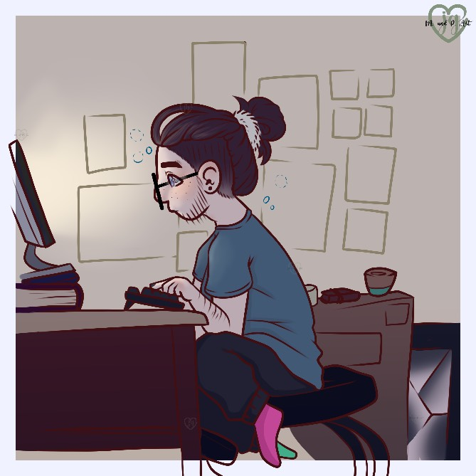

My name is Jackson and I have been a semi-professional artist since late 2016. I mainly focus on character art and design but my dream is to be a graphic designer. In my free time I enjoy doodling, reading, taking care of plants, and cooking / baking.
MY main focus is digital art abut I enjoy traditional art too. My favorite mediums are:
When working digitaly I mainly do character art and designs of human, humanoid, furry, and pony charicters. But when I am working traditionaly I do a lot of studies and portrats along side character art.
I post on many platforms but you can find all of them on my Linktree!